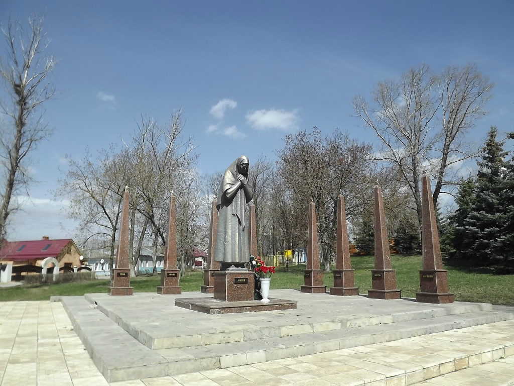

Места нашей области, посвящённые Великой Победе
 Домой
Домой
Памятник Матери (Задонск)
У этого памятника реальная история материнского и ратного подвига, которая никого не может оставить равнодушным. Памятник посвящен жительнице Задонска Марии Фроловой. Эта женщина, у которой война отняла 8 сыновей, по праву может олицетворять образ матери. Мария и Георгий Фроловы поженились еще до Революции. Георгий был старше Марии на 20 лет. К жене относился с трепетом, нежностью, был по-настоящему влюблен в супругу и благодарен за детей. Мария родила ему 14 детей, двое из которых умерли в младенчестве. Они вырастили и воспитали двух дочерей и 10 сыновей – красавцев, умниц, спортсменов и музыкантов. Дети росли крепкими, дружными и жизнерадостными. Летом по несколько раз в день переплывали Дон. Зимними вечерами читали вслух книги. Старшая дочь Антонина первой покинула родительский дом в Задонске и перебралась в Ленинград, город, ставший для детей Фроловых второй родиной. Следом за сестрой на берега Невы потянулись и братья. Устраивались на работу, обзаводились семьями. Когда в 1941 пришло известие о том, что началась война, мать обреченно сказала: «Значит, наши все уйдут». На фронт задонские братья уходили из Ленинграда и большинство из них погибли, защищая Северную столицу. Мария получила 6 похоронок – шестеро сыновей погибли во время военных действий. Двое сыновей умерли от последствий фронтовых ранений вскоре после Победы. Муж Марии Георгий умер в мае 1941 года. Получая сообщения о гибели братьев, горечь и ужас утрат разделяла вместе с матерью младшая дочь Анна. Анна жила с матерью в Задонске, выполнив данное братьям обещание – не оставлять мать. Мария Матвеевна ушла из жизни в возрасте 96 лет.
В 2002 году по решению районной администрации и районного Совета депутатов начался сбор средств на строительство памятника Марии Матвеевне Фроловой, памятника Матери. Основные средства на возведение памятника были выделены из областногои районного бюджетов. В сооружении памятника есть посильный вклад задонцев, искренно почитающих память семьи Фроловых. Почти 100 тысяч рублей собрали, что называется, всем миром. Пожертвования приходили не только со всей области, но и от жителей Санкт-Петербурга – потомков тех, кого, не пощадив своей жизни, защищали братья Фроловы.
D центре композиции – изваяние немолодой женщины, застывшей в вечной скорби. Скульптура Матери выполнена из полимербетона. Вокруг восемь обелисков с мужскими именами: Михаил, Дмитрий, Константин, Тихон, Василий, Леонид, Николай, Петр.
Изображения:
